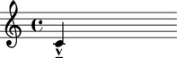
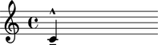

The Abjad _ArticulationsInterface class
The Abjad _ArticulationsInterface class manages note, rest and chord articulations.
Public interface
Attributes
Abjad Note, Rest, Chord and Skip can have articulations.
Articulations are managed through the _ArticulationsInterface.
abjad> note = Note(0, (1, 4)) abjad> note.articulations Articulations( )
Articulations can be set directly as a list of articulation descriptors.
These descriptors can be either a single Python string giving the type of articulation (e.g. 'tenuto', 'marcato', etc.),
abjad> note = Note(0, (1, 4)) abjad> note.articulations = ['marcato', 'tenuto'] abjad> note.articulations Articulations(-\marcato, -\tenuto)
or a pair of strings of the form ('type', 'placement'), where 'type' gives the articulation type, as above, and 'placement' indicates its placement relative to the note.
abjad> note = Note(0, (1, 4))
abjad> note.articulations = [('marcato', 'up'), ('tenuto', 'down')]
abjad> note.articulations
Articulations(^\marcato, _\tenuto)

Valid strings for placement indication are
'up',
'down',
'default' and their respective shortcuts
'^',
'_' and
'-'.
All articulations can we removed by assigning None to the articulations interface.
abjad> note = Note(0, (1, 4)) abjad> note.articulations = None abjad> note.articulations Articulations( )
The articulations interface behaves like a Python list, so it implements the following methods:
append( )extend( )remove( )pop( )insert( )sort( )
All work as you would expect.
Do we need to describe every list-like method here? Seems like we shouldn't. Nope. Listing the methods here works great.